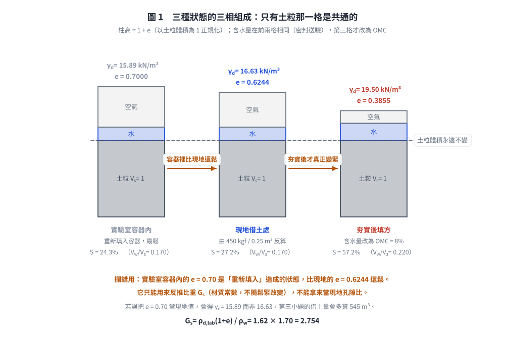
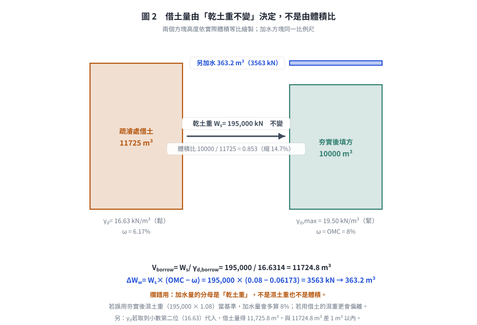

考題編號：SM-2016-2
主分類： SM-U1-1 土壤基本性質
副分類： SM-U1-3 土壤夯實及壓密
分析法： 混合
標籤： 三相關係 比重 孔隙比 含水量 現地密度試驗 土粒重不變原則 最佳含水量
1. 原始題目重述 (Problem Restatement)
二、某土方工程採用另一疏濬工程之土方執行填土工程，取土處為砂礫石土壤，經大型現地密度試驗，挖孔體積為 $0.25\mathrm{~m^3}$ ，於孔洞內取出土重 $450\mathrm{~kgf}$，以四分法取土密封送回實驗室。於實驗室取適量土樣放入 $1,000\mathrm{~cm^3}$ 容器內，秤重為 $1,720\mathrm{~g}$，土壤經烘乾測得土樣重 $1,620\mathrm{~g}$，並測得該容器內土壤孔隙比 $e$ 為 $0.70$；經實驗室夯實試驗測得 $\gamma_{d,max} = 19.50\mathrm{~kN/m^3}$，最佳含水量 $\mathrm{OMC} \approx 8\%$。（假設水的密度 $\rho_w = 1.0\mathrm{~g/cm^3}$ ）
(一) 請分析土樣之比重 $G_s$。（5 分）
(二) 取土處土壤之乾單位重（$\mathrm{kN/m^3}$）與濕單位重（$\mathrm{kN/m^3}$）為何？（8 分）
(三) 如以最佳含水量（OMC）方式夯實後之填土體積為 $10,000\mathrm{~m^3}$ ，請分析此工程需取疏濬處多少土方（$\mathrm{m^3}$）？（6 分）
(四) 承上，以 OMC 含水量夯實施工需再添加多少水量（$\mathrm{m^3}$）？（6 分）
(本題無附圖)
2. 考題核心精神與出題者意圖 (Core Concepts & Examiner's Intent)
本題測驗考生的土壤物理性質轉換以及借土工程體積計算的基本功。出題者意圖包含：
- 確認考生能否分辨「原狀土」、「實驗室樣品」和「夯實後土壤」這三種狀態下的物理量（含水量、密度、孔隙比）。
- 測驗「密封」這一動作代表含水量不變，即現地含水量與實驗室量測的含水量相同。
- 測驗借土填築的體積換算原則：土粒重（或乾重）不變原則。無論土壤如何擾動、夯實，所含「固體土粒重」是不會改變的，必須以此作為計算基準。
- 測驗加水量計算：加水量的基準同樣是基於土粒重，以目標含水量減去現地含水量來求得。
3. 解題戰略地圖與陷阱分析 (Strategic Roadmap & Trap Analysis)
作戰計畫：
- 求含水量： 利用實驗室 $1,720\mathrm{~g}$ 的濕土和 $1,620\mathrm{~g}$ 的乾土，計算現地與實驗室土壤共用的含水量 $w$。
- 求比重 $G_s$： 利用實驗室量測之乾土重 $1,620\mathrm{~g}$ 與體積 $1,000\mathrm{~cm^3}$，先求得該狀態下的乾密度 $\rho_{d,lab}$。再透過孔隙比 $e=0.70$ 的關係式 $\rho_d = \frac{G_s\rho_w}{1+e}$ 求出比重 $G_s$。
- 求現地單位重： 利用挖孔試驗的體積 $0.25\mathrm{~m^3}$ 與總重 $450\mathrm{~kgf}$，求得現地濕密度 $\rho_t$。接著計算現地乾密度 $\rho_d$，再乘上重力加速度 $g$ 轉換為乾單位重 $\gamma_d$ 與濕單位重 $\gamma_t$。
- 體積與加水計算： 利用填土區的目標乾單位重與體積，算出所需總乾重 $W_s$；以此除以現地的乾單位重得到所需開挖體積。最後利用總乾重乘上含水量差值，求出需要添加的水重並換算為體積。
陷阱分析：
- 單位混淆： 題目中混用了 $\mathrm{kgf}$, $\mathrm{g}$, $\mathrm{kN}$, $\mathrm{m^3}$, $\mathrm{cm^3}$。必須小心處理密度（質量/體積）與單位重（力/體積）的轉換，建議重力加速度取 $g=9.81\mathrm{~m/s^2}$ 以符合常規。
- 實驗室容器與現地的差異： 放入 $1,000\mathrm{~cm^3}$ 容器的土壤孔隙比 $e=0.70$ 是這部分的特定狀態，不能當作現地土壤的孔隙比，只能用來算 $G_s$。
- 加水量基準： 水量的增減是以「乾土重 $W_s$」為分母，不可用濕土重或體積計算。

圖 1 三種狀態的三相組成。它攔的是把實驗室容器內的 $e = 0.70$ 當成現地孔隙比：那是「重新填入容器」造成的狀態，比現地的 $e = 0.6244$ 還鬆；若誤用，$\gamma_d$ 會變成 15.89 而非 16.63，第三小題的借土量會多算 545 m³。$e = 0.70$ 唯一的用途是反推材質常數 $G_s$。
3.5 變數層次分析 (Variable Hierarchy Analysis)
最終目標
求出土壤比重 $G_s$、現地乾/濕單位重、需開挖的現地土方體積，以及施工時需添加的水量。
本題關鍵公式（依計算順序）
- 含水量：$w = \frac{W_t - W_s}{W_s}$
- 乾密度與比重關係：$\rho_d = \frac{G_s \rho_w}{1+e}$
- 現地濕單位重：$\gamma_t = \frac{W_t}{V} \cdot g$
- 現地乾單位重：$\gamma_d = \frac{\boxed{\gamma_t}}{1+\boxed{w}}$
- 總需土乾重：$W_s = \gamma_{d,max} \times V_{fill}$
- 所需現地體積：$V_{borrow} = \frac{\boxed{W_s}}{\boxed{\gamma_{d,borrow}}}$
- 需加水重：$\Delta W_w = \boxed{W_s} \times (\mathrm{OMC} - \boxed{w})$
- 需加水體積：$V_w = \frac{\boxed{\Delta W_w}}{\gamma_w}$
L1：題目直接給定
| 符號 | 數值 | 說明 |
|---|---|---|
| $V_{borrow}$ | $0.25\mathrm{~m^3}$ | 現地挖孔體積 |
| $W_{t,borrow}$ | $450\mathrm{~kgf}$ | 現地挖出濕土重 |
| $V_{lab}$ | $1,000\mathrm{~cm^3}$ | 實驗室容器體積 |
| $W_{t,lab}$ | $1,720\mathrm{~g}$ | 實驗室濕土重 |
| $W_{s,lab}$ | $1,620\mathrm{~g}$ | 實驗室乾土重 |
| $e_{lab}$ | $0.70$ | 實驗室土樣孔隙比 |
| $\gamma_{d,max}$ | $19.50\mathrm{~kN/m^3}$ | 填方區目標乾單位重 |
| $V_{fill}$ | $10,000\mathrm{~m^3}$ | 填方區目標體積 |
| $\mathrm{OMC}$ | $8\%$ | 目標夯實含水量 |
| $\rho_w$ | $1.0\mathrm{~g/cm^3}$ | 水的密度 |
L2：需知識點推導
求含水量與比重
| 符號 | 公式／來源 | 卡關? |
|---|---|---|
| $w$ | $w = \frac{W_{t,lab} - W_{s,lab}}{W_{s,lab}}$ | |
| $\rho_{d,lab}$ | $\rho_{d,lab} = \frac{W_{s,lab}}{V_{lab}}$ | |
| $G_s$ | $G_s = \frac{\rho_{d,lab} (1 + e_{lab})}{\rho_w}$ | |
求現地單位重
| 符號 | 公式／來源 | 卡關? |
|---|---|---|
| $\rho_{t,borrow}$ | $\rho_{t,borrow} = \frac{W_{t,borrow}}{V_{borrow}}$ | |
| $\gamma_t$ | $\gamma_t = \rho_{t,borrow} \times g$ | |
| $\gamma_d$ | $\gamma_d = \frac{\gamma_t}{1+w}$ | |
求借土體積與加水量
| 符號 | 公式／來源 | 卡關? |
|---|---|---|
| $W_{s,total}$ | $W_{s,total} = \gamma_{d,max} \times V_{fill}$ | |
| $V_{excavate}$ | $V_{excavate} = \frac{W_{s,total}}{\gamma_d}$ | |
| $\Delta W_w$ | $\Delta W_w = W_{s,total} \times (\mathrm{OMC} - w)$ | |
| $V_w$ | $V_w = \frac{\Delta W_w}{\gamma_w}$ | |
L3：深層知識（不懂就卡住）
| 知識點 | 說明 | 卡關? |
|---|---|---|
| 質量與重量單位的轉換 | $1\mathrm{~kgf}$ 在地球表面為 $9.81\mathrm{~N}$，單位重 $\gamma = \rho \times g$ | |
| 固體不變原則 | 土壤經過開挖、搬運、夯實，只要沒有漏失，土粒重 $W_s$ 是唯一不變的基準量 |
4. 步驟化詳細計算過程 (Step-by-Step Detailed Calculation)
(一) 分析土樣之比重 $G_s$
由於土壤放入密封袋送回實驗室，其含水量與現地相同：
$$ w = \frac{W_{t,lab} - W_{s,lab}}{W_{s,lab}} = \frac{1720\mathrm{~g} - 1620\mathrm{~g}}{1620\mathrm{~g}} = \frac{100}{1620} = 6.173\% $$
實驗室內 $1,000\mathrm{~cm^3}$ 容器的土壤乾密度為：
$$ \rho_{d,lab} = \frac{W_{s,lab}}{V_{lab}} = \frac{1620\mathrm{~g}}{1000\mathrm{~cm^3}} = 1.62\mathrm{~g/cm^3} $$
利用乾密度與孔隙比的關係式 $\rho_d = \frac{G_s \rho_w}{1+e}$，代入已知孔隙比 $e = 0.70$：
$$ 1.62 = \frac{G_s \times 1.0}{1 + 0.70} $$
$$ G_s = 1.62 \times 1.70 = 2.754 $$
策略註解： 實驗室中量得的孔隙比 $e=0.70$ 是因重新填入容器產生的特定狀態，並非現地孔隙比。但由於土粒的比重是材質常數，不受夯實或擾動影響，因此可藉由此狀態反推 $G_s$。
$$ \boxed{G_s = 2.75} $$
(二) 取土處土壤之乾單位重與濕單位重
現地（取土處）挖孔體積 $V = 0.25\mathrm{~m^3}$，挖出濕土重 $W_t = 450\mathrm{~kgf}$。
現地濕密度為：
$$ \rho_{t,borrow} = \frac{450\mathrm{~kg}}{0.25\mathrm{~m^3}} = 1800\mathrm{~kg/m^3} = 1.80\mathrm{~t/m^3} $$
為求單位重，乘上重力加速度 $g = 9.81\mathrm{~m/s^2}$：
濕單位重 $\gamma_t$：
$$ \gamma_t = \rho_{t,borrow} \times g = 1800\mathrm{~kg/m^3} \times 9.81\mathrm{~m/s^2} = 17658\mathrm{~N/m^3} = 17.66\mathrm{~kN/m^3} $$
乾單位重 $\gamma_d$：
$$ \gamma_d = \frac{\gamma_t}{1 + w} = \frac{17.658}{1 + 0.061728} = 16.6314\mathrm{~kN/m^3} \approx 16.63\mathrm{~kN/m^3} $$
$$ \boxed{現地濕單位重 \gamma_t = 17.66\mathrm{~kN/m^3}} $$
$$ \boxed{現地乾單位重 \gamma_d = 16.63\mathrm{~kN/m^3}} $$
(三) 分析需取疏濬處多少土方（體積）
填土工程以 $\gamma_{d,max} = 19.50\mathrm{~kN/m^3}$ 夯實，體積 $V_{fill} = 10,000\mathrm{~m^3}$。
計算填築區所需的總固體土粒重 $W_{s,total}$：
$$ W_{s,total} = \gamma_{d,max} \times V_{fill} = 19.50\mathrm{~kN/m^3} \times 10000\mathrm{~m^3} = 195,000\mathrm{~kN} $$
由土粒重不變原則，疏濬處被開挖的土壤其所含乾土重也必須是 $195,000\mathrm{~kN}$。
疏濬處現地開挖體積 $V_{excavate}$ 為：
$$ V_{excavate} = \frac{W_{s,total}}{\gamma_{d,borrow}} = \frac{195,000\mathrm{~kN}}{16.6314\mathrm{~kN/m^3}} = 11724.81\mathrm{~m^3} $$
策略註解： 計算時應盡量帶入未四捨五入的精確值 ($\gamma_d = 16.6314$) 避免累計誤差；若使用 $16.63$ 代入則會得到 $11,725.8\mathrm{~m^3}$。
$$ \boxed{需取疏濬處土方體積 V_{excavate} = 11,725\mathrm{~m^3}} $$

圖 2 借土量由乾土重不變決定。它攔的是拿體積比去換算：兩個方塊的體積比 0.853 是「結果」而不是「依據」，依據是兩端共有的 $W_s = 195{,}000$ kN。加水量同理——分母是乾土重，不是濕土重也不是體積。
(四) 需再添加多少水量（體積）
填築時要求的目標含水量為 $\mathrm{OMC} = 8\%$。
現地土壤已含有的含水量為 $w = 6.173\%$。
需增加的含水量差值 $\Delta w$：
$$ \Delta w = 8\% - 6.1728\% = 1.8272\% $$
需添加的水重 $\Delta W_w$：
$$ \Delta W_w = W_{s,total} \times \Delta w = 195,000\mathrm{~kN} \times 0.018272 = 3563.04\mathrm{~kN} $$
利用水的單位重 $\gamma_w = 9.81\mathrm{~kN/m^3}$ 將重量轉換為水體積 $V_w$：
$$ V_w = \frac{\Delta W_w}{\gamma_w} = \frac{3563.04\mathrm{~kN}}{9.81\mathrm{~kN/m^3}} = 363.2\mathrm{~m^3} $$
(註：若在計算過程利用質量處理，需水量 $m_w = \frac{195000\mathrm{kN}}{9.81} \times 0.018272 = 363.2\mathrm{t}$，因水的密度為 $1\mathrm{t/m^3}$，得 $363.2\mathrm{m^3}$)
$$ \boxed{需添加的水量體積 V_w = 363.2\mathrm{~m^3}} $$
5. 關鍵爭議點與進階探討 (Critical Issues & Advanced Discussion)
- $g$ 值的選用：
題目中明確使用 $\mathrm{kgf}$ 作為力的單位，並要求輸出為 $\mathrm{kN/m^3}$。在工程計算中，$1\mathrm{~kgf}$ 定義為 $1\mathrm{~kg}$ 在標準重力 $9.80665\mathrm{~m/s^2}$ 下的重量。考試時統一採用 $g=9.81\mathrm{~m/s^2}$ 進行 $\mathrm{kgf}$ 到 $\mathrm{N}$ 的換算是最無爭議的作法。若考生使用 $g=9.8$ 或 $g=10$，雖然結果略有不同，但只要明確寫出假設，通常也會給分。 - 算出來的 $G_s = 2.754$ 偏高，但這是題目數據的必然結果：
一般土壤比重約 $2.65 \sim 2.70$（石英砂 2.65、砂礫石多在 2.65～2.72），本題由
$\rho_{d,lab} = 1.62$ 與 $e = 0.70$ 反算得 2.754，略高於常見範圍。
這是給定數據自身的結果，不是計算錯誤，也不需要「修正」成 2.70；
作答時直接寫 2.75 即可，若行有餘力可加註「數值略高於一般砂礫石範圍，
推測與試樣中含較重礦物或量測誤差有關」，以示對數量級有感。
順帶驗算，以 $G_s = 2.754$ 回推可得：借土區 $e = 0.624$、$S = 27.2\%$；
填方區 $e = 0.386$、$S_{OMC} = 57.2\%$，且 $\omega = 8\%$ 時的零空氣孔隙上限為
$\gamma_{d,ZAV} = \frac{G_s\gamma_w}{1+\omega G_s} = 22.14 \text{ kN/m}^3 > 19.50$，
本題的夯實目標是可以達成的（對照 SM-2008-1 即為做不到的案例）。 - 收縮比的合理性：借土 $11{,}725 \text{ m}^3$ 夯成 $10{,}000 \text{ m}^3$，
體積比 $10000/11725 = 0.853$，即體積縮減約 15%。砂礫石由鬆散現地狀態夯至
$\gamma_{d,max}$ 出現一至二成的縮減屬正常；若算出來大於 1（愈夯愈膨脹）或小於 0.6，
就該回頭檢查是不是把乾／濕單位重用反了。 - 單位精度的保持：
在(三)與(四)計算中，若直接使用四捨五入到小數點第二位的 $\gamma_d = 16.63\mathrm{~kN/m^3}$ 進行計算，會導致體積計算結果產生明顯誤差。工程計算強烈建議中間過程應保留至少4位有效數字，直到最後的答案再四捨五入。
解析日期：見 wiki/log.md ｜ 圖解補繪：2026-08-28（向量 SVG，程式繪製，腳本 gen_SM-2016-2.py 可重跑；同名 2× PNG 供簡報／影片管線使用）